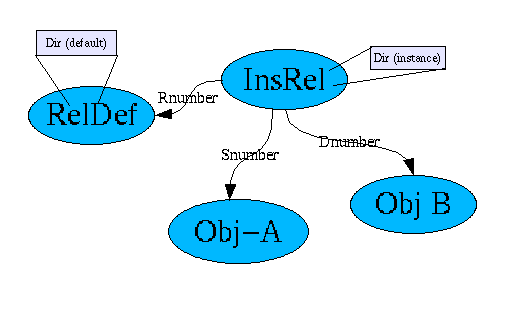

Relations Installation Document
18-4-2001, Pierre van Rooden
When defining relations, a property is available known as
'direction'. It is an integer value, which determines whether a
relation is 'unidirectional' (1) or 'bidirectional' (2).
A
bidirectional relation is 'visible' to both the source and the
target, while a unidirectional relation is only visible to the
source.
This document explains how to add functionality to the system such
that directionality can be used.
Care should be taken, as some
changes involve manipulations of the database and running a
conversion program that may make quite a few changes.
You need the latest CVS version of MMBase for this conversion to work.
To enable fast search for relations filtered on direcionality, we
have opted to include the directionality information in the relation
objects.
The value of this field will depend on the value of the
relations 'relation defintion' object.
The resulting model looks like this:
This
model only shows InsRel, not the derived relation
builders, who work in much the same way.
The following are the steps needed to add support for directionality to MMBase.
As the model above implies, changes have to be made to existing
systems, in that an addiitonal field will need to be added to the
InsRel builder, as well as all InsRel
derived builders.
STEP 1 helps you to determine which builders
have to be altered.
STEP 2 explains how to add the required field
in the database.
STEP 3 explains how to fix your configuration
files
STEP 4 explains how to initialize the new field using a
conversion program
STEP 5 explains how to test the new
configuration
It will be necessary to determine the builders that are in use as
relation builders, before you can convert.
You need this to know
which database tables to change and which builder configuration files
to convert.
You can use the builder configuration files to determine these
builders. The configuration files are in the 'builder' sub directory
of your configuration directory.
This will not only reveal
currently active builders, but also those builders which are inactive
(i.e. for future use). Search for relationbuilder files that contain
the dnumber or snumber field.
i.e. In UNIX like systems, you can run:
grep "<name>rnumber</name>" *
which may return as a result :
authrel.xml: <name>rnumber</name>
posrel.xml:
<name>rnumber</name>
typerel.xml:
<name>rnumber</name>
insrel.xml:
<name>rnumber</name>
nrrel.xml: <name>rnumber</name>
Ignore typerel (not a relation builder, but a core
builder). The other builders are the relation builders you will have
to change.
dir field to the relation tables.Each active builder (active is a
property set in the configuration file) determined through STEP 1 has
a corresponding database table.
Builders that are inactive
will most likely not have a table, but it may be useful to check for
its existence anyway.
It is necessary to add a new field to these
tables. This works differently for various databases, which means
that the action must be done manually.
The new system performs a check on each active relation builder.
Only if all builders have a dir field will
directionality become active. As long as that is NOT the case,
directionality will be ignored. In addition, as long as the dir
field is not properly initalized (has a value of 1,
meaning unidirectional, or 2, meaning
bidirectional), the system will treat the field as
indicating bidirectional . This ensures backward
compatibility with an older system.
The dir field in InsRel is a copy of the
value of the dir field in the RelDef
definition that is used to create the relation (identified by the
rnumber in InsRel).
The resulting
InsRel table should look like this:
|
Field |
Type |
Null |
Key |
Default |
|---|---|---|---|---|
|
number |
integer |
No |
Unique |
0 |
|
otype |
integer |
No |
0 |
|
|
owner |
string(12) |
Yes |
Null |
|
|
dnumber |
integer |
No |
0 |
|
|
snumber |
integer |
No |
0 |
|
|
rnumber |
integer |
No |
0 |
|
|
dir |
integer |
No(*) |
-1 |
*) We cannot make his field nullable, as MMbase does not support null vallues for a field in MMObjectNode.
To allow new config files to work with older code, we cans pecify 0 or -1 a s adefault value, which is interpreted as
bidirectional, as noted above.
The execution is dependent on the database.
You will need to
add a dir field to each table that represents a relation
builder. Which builders these are is dependent on the system.
In
object-oriented databases such as Informix, only the top builder
(InsRel) need be changed, though additional configuration may be
necessary to notify this change to derived tables (see your manual).
Below we will give you the necessary steps for a number of often
used databases.
Before you start, it will be wise to shut down all MMBase servers.
You will be changing the database tables, which may cause
problems if other people try to use those tables.
MySQL:
For each table to be changed, run the following statement:
ALTER TABLE <basename>_<tablename> ADD COLUMN dir int(11) DEFAULT -1;
<basename> is the 'base' name of the
database as defined in the mmbaseroot.xml configuration
file.
<tablename> is the name of the builder to
change..
If you have verified that ALL relations are bi-directional, you can instead run the statement:
ALTER TABLE <basename>_<tablename> ADD COLUMN dir int(11) DEFAULT 2;
and skip the conversion step (Step 4) later on.
Informix:
Forthcoming (?)
Take care that you add the new 'dir' field to the end of the table's field list.
The field is now added,. If it is initialized to null
or 0, MMBase will recognize that the object concerned is
not initialized, which causes it to default to the old behavior. This
ensures backward compatibility.
STEP 4 will allow you to initialize this field, using the original
rules. Once initialized, the field will be used for all future
builder references from reldef.
We now have to add the dir
field to the configuration files, so MMBase knows it is there and how
to handle it.
Change all relation builder configration files
(obtained in STEP1) - also those that are currently inactive.
This will prevent problems later on.
The configuration files are
in the builder sub directory of your configuration
directory, and are called <buildername>.xml.
You need to add the following text (copy and paste) to each relation builder file, at the end of the fields list, in every file :
<!-- <field> 'dir' -->
<field>
<!-- gui related -->
<gui>
<guiname
xml:lang="fr">Direction</guiname>
<guiname
xml:lang="nl">Richting</guiname>
<guiname
xml:lang="en">Direction</guiname>
<guiname
xml:lang="us">Direction</guiname>
<guitype>dirs</guitype>
</gui>
<!--
editor related -->
<editor>
<positions>
<!-- position in the input area of the editor -->
<input>-1</input>
<!-- position in list area of
the editor -->
<list>4</list>
<!--
position in search area of the editor -->
<search>4</search>
</positions>
</editor>
<!-- database related -->
<db>
<!-- name of the field in the database -->
<name>dir</name>
<!-- MMBase datatype and
demands on it -->
<type state="persistent"
notnull="false" key="false">INTEGER</type>
</db>
</field>
After this step, if you start the system, directionality weill
have been turned on.
You will still have to initialize the new
relation builder fields if you have not yet done so (see STEP 4).
The old system treated every relation as being bidirectional.
This
means that you CAN initialize the system by running a SQL query on
your database that sets all dir fields to bidirectional
(the value 2).
If you have relations that were specified (in the reldef
builder) as unidirectional, you need to run the
converter program. This program runs through all relations, setting
the dir property to the value of the associated reldef
object.
The conversion program class can be located in the
org/mmbase/module/tools directory in your MMBase class
path (or in the mmbase.jar file), and is called
InsRelConvert.
When starting the program, you need to
specify the config parameter as you do when starting MMBase:
java \Dmmbase.config=<configdir>
org.mmbase.module.tools.InsRelConvert
The program starts MMBase startup log, runs the conversion, and
ends with a notification of the conversion results.
For each
builder handled, the system outputs the line::
INFO Checked <x> nodes in <builder>,
changed <y> nodes.
Where <x>
is the number of relations that the builder contained, and <y>
the number of relations of which the dir field was
initialized.
<y> can be smaller than <x>
as some nodes in the system may already have been initialized during
STEP 2 or during test runs.
To check whether the conversion
succeeded, you can run the program a second time.
It should then
indicate that no fields have been changed (<y> is
shown to be 0).
It is advisable to shut down MMBase
during the conversion run, as the MMBase internal cache will not be
updated, and thus may later override any changes made by the
conversion tool.
Forthcoming.